Деление чисел довольно непростая операция как в освоении, так и в использовании. Рекомендуем набраться терпения, чтобы осилить этот урок до конца.
Что такое деление?
Деление это действие, позволяющее что-либо разделить.
Деление состоит из трёх параметров: делимого, делителя и частного.
Делимое это то что делят;
Делитель это число, показывающее на сколько частей нужно разделить делимое.
Частное это собственно результат.
Пусть у нас имеются 4 яблока:
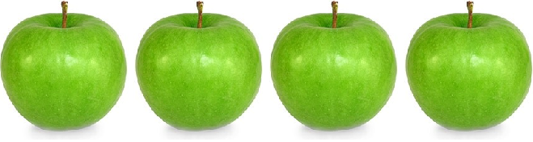
Разделим их поровну на двоих друзей. Тогда деление покажет сколько яблок достанется каждому. Нетрудно увидеть, что каждому достанется по два яблока:
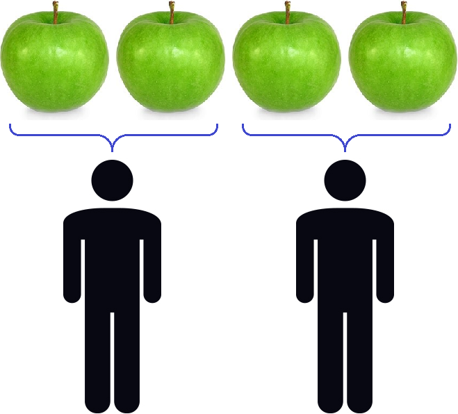
Процесс деления четырех яблок на двоих друзей можно описáть следующим выражением:
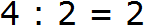
В этом примере роль делимого играют яблоки. Роль делителя играют двое друзей, показывающих на сколько частей нужно разделить 4 яблока. Роль частного играют два яблока, показывающие сколько досталось каждому.
Говоря о делении, можно рассуждать и по-другому. Вернёмся к предыдущему выражению 4 : 2 = 2. Можно посмотреть на делитель 2 и задать вопрос «сколько двоек в четвёрке?» и ответить: «две двойки». Действительно, если сложить две двойки, то получится число 4
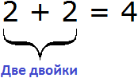
В ситуации с четырьмя яблоками можно задать вопрос «сколько раз два яблока содержатся в четырёх яблоках» и ответить: «два раза».
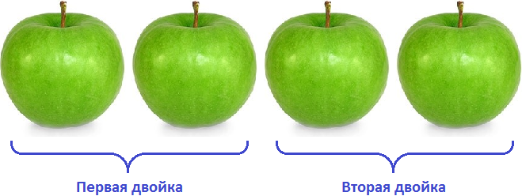
Чтобы научиться делить, нужно хорошо знать таблицу умножения. Почему же умножения? Ведь мы говорим о делении. Дело в том, что деление это действие, обратное умножению. Данную фразу можно понимать в прямом смысле. Например, если 2 × 5 = 10, то 10 : 5 = 2.
Видно, что второе выражение записано в обратном порядке. Если у нас имеются два яблока и мы захотим увеличить их в пять раз, то запишем 2 × 5 = 10. Получится десять яблок. Затем, если мы захотим обратно уменьшить эти десять яблок до двух, то запишем 10 : 5 = 2
Знак деления выглядит в виде двоеточия : но также можно встретить знак двоеточия и тире ÷
На письме разумнее использовать двоеточие, поскольку оно выглядит аккуратнее.
Деление с остатком
Остаток — это то что осталось от действия деления неразделённым.
Например, пять разделить на два будет два и один в остатке:
5 : 2 = 2 (1 в остатке)
Можно проверить это умножением:
(2 × 2) + 1 = 5
Допустим, имеются пять яблок:
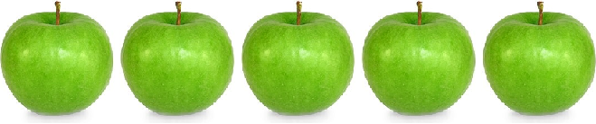
Разделим их поровну на двоих друзей. Но разделить поровну пять целых яблок не полýчится. Тогда данное деление покажет, что каждому достанется два яблока, а одно яблоко будет в остатке:
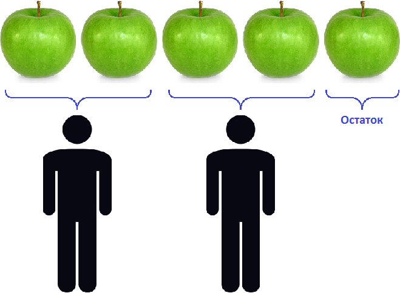
Деление уголком
Когда требуется разделить большое число, то прибегают к такому методу как деление уголком.
Прежде чем делить уголком, человек должен знать:
- обычное деление маленьких чисел;
- деление с остатком;
- умножение в столбик;
- вычитание в столбик.
Рассмотрим деление уголком на простом примере. Пусть требуется найти значение выражения 9 : 3. Уголком это выражение записывается следующим образом:
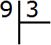
Это простой пример. Все знают, что девять разделить на три будет три. Ответ (частное) записывается под правым углом:
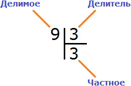
Чтобы проверить есть ли остаток от деления, нужно частное умножить на делитель и полученный ответ записать под делимым. Частное в данном случае это 3, делитель тоже 3. Перемножаем эти два числа: 3 × 3 = 9. Получили 9. Записываем эту девятку под делимым:
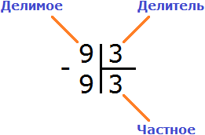
Теперь от делимого вычитаем девятку, которую мы под ним написали: 9 − 9 = 0. Остаток равен нулю. Проще говоря, остатка нет. На этом деление успешно завершено:
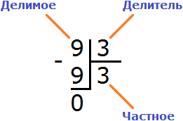
Пример 2. Найти значение выражения 8 : 3
Восемь на три просто-так не разделится. Таблица умножения тоже не поможет. В данном случае будет присутствовать остаток от деления.
Сначала запишем данное выражение уголком:
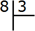
Теперь надо задать вопрос: «сколько троек в восьмёрке?» В восьмёрке содержится две тройки. Это можно увидеть даже воочию, если мы представим восьмёрку как восемь палочек:
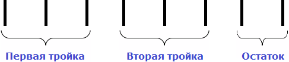
В школе частное подбирается методом подбора. Все мы слышали такие фразы как «берём по одному» , «берём по два» или «берём по три». У нас сейчас как раз такой случай. Мы взяли по два, ответив что в восьмёрке две тройки. Записываем двойку в правом уголке:
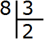
Теперь вынимаем остаток. Для этого умножаем частное на делитель (2 на 3) и записываем полученное число под делимым:
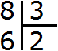
Далее из 8 вычитаем 6. Полученное число и будет остатком:
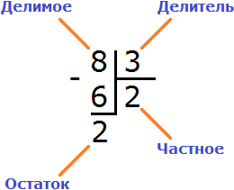
8 : 3 = 2 (2 в остатке)
Проверка:
(2 × 3) + 2 = 6 + 2 = 8
Деление многозначного числа на однозначное
Данная тема с первого раза может показаться непонятной. Не спешите отчаиваться и забрасывать обучение. Понимание придёт в любом случае. Если не сразу, то немного позже. Главное не сдаваться и продолжать упорно изучать.
В предыдущих примерах мы делили однозначное число на однозначное, и это не доставляло нам лишних проблем. Сейчас мы займёмся тем, что будем делить многозначное число на однозначное.
Если непонятно, что такое однозначные и многозначные числа, советуем изучить предыдущий урок, который называется умножение.
Чтобы разделить многозначное число на однозначное, нужно сначала посмотреть на первую цифру этого многозначного числа, и проверить больше ли она делителя. Если больше, то её надо разделить на делитель, а если нет, то проверить больше ли делителя первые две цифры многозначного числа. Если первые две цифры больше делителя, то надо разделить их на делитель, а если нет, то проверить больше ли первые три цифры многозначного числа. И так до тех пор, пока не будет выполнено первое деление.
Сложно? Ни чуть, если мы разберём несколько примеров.
Пример 1. Найти значение выражения 25 : 3
25 это многозначное число, а 3 — однозначное. Применяем правило. Смóтрим на первую цифру многозначного числа. Первая цифра это 2. Два больше, чем три? Нет. Поэтому смóтрим первые две цифры многозначного числа. Первые две цифры образуют число 25. Двадцать пять больше чем три? Да. Поэтому выполняем деление числа 25 на 3. Записываем уголком данное выражение и начинаем делить:
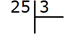
Сколько троек в числе 25? Если с первого раза ответить сложно, можно заглянуть в таблицу умножения на три. Там необходимо отыскать произведение, которое меньше 25, но очень близко к нему или равно ему. Если найдём такое произведение, то необходимо забрать оттуда множитель, который дал такое произведение:
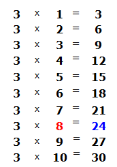
Это таблица умножения на три. В ней необходимо найти произведение, которое меньше 25, но очень близко к нему или равно ему. Очевидно, что это произведение 24, которое выделено синим. Из этого выражения необходимо забрать множитель, который дал такое произведение. Это множитель 8, который закрашен красным.
Данная восьмёрка и отвечает на вопрос сколько троек в числе 25. Записываем её в правом уголке нашего примера:
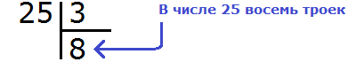
Теперь вынимаем остаток. Для этого умножаем частное на делитель (8 на 3) и полученное число записываем под делимым:
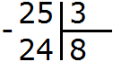Теперь из делимого вычитаем число 24, получим 1. Это и будет остатком:
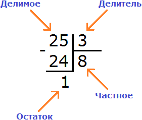
25 : 3 = 8 (1 в остатке)
Проверка:
(8 × 3) + 1 = 24 + 1 = 25
Последний остаток всегда меньше делителя. Если последний остаток больше делителя это означает, что деление не завершено.
В приведённом примере последним остатком было число 1, а делителем число 3. Единица меньше чем три, поэтому деление завершено. Последний остаток мéньший делителя говорит о том, что он не содержит чисел равных делителю.
В нашем примере, если задать вопрос «сколько троек в единице?», то ответом будет «нисколько», потому что единица не содержит троек.
Пример 2. Разделить 326 на 4.
Смóтрим на первую цифру числа 326. Первая цифра это 3. Она больше делителя 4? Нет. Тогда проверяем две цифры делимого. Две цифры делимого образуют число 32. Больше ли оно делителя 4? Да. Значит можно выполнять деление.
Записываем уголком данное выражение:
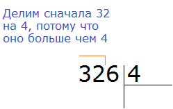
Теперь задаём вопрос: «сколько четвёрок в числе 32?». В числе 32 восемь четвёрок. Это можно увидеть в таблице умножения на четыре:
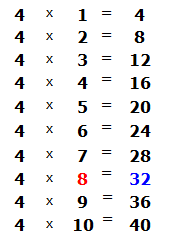
Данная восьмёрка, которая выделена красным отвечает на вопрос сколько четвёрок в числе 32. Записываем её в правом уголке нашего примера:
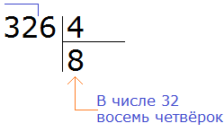Теперь умножаем 8 на 4, получаем 32 и записываем это число под делимым. Далее вычитаем это число из 32. Получим 0. Поскольку решение ещё не завершено, ноль не записываем:
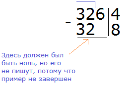Первое число 32 разделили. Осталось разделить оставшуюся 6. Для этого сносим эту шестёрку:
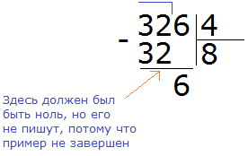
Теперь делим 6 на 4. Для этого задаём вопрос: «сколько четвёрок в шестёрке?» В шестёрке одна четвёрка, это можно увидеть воочию, если представить шестёрку как шесть палочек:
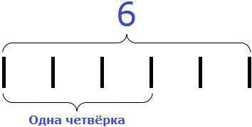
Записываем единицу в правом уголке нашего ответа:
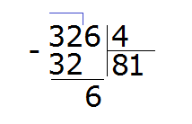Теперь умножаем нашу единицу на делитель (1 на 4) и записываем полученное число под шестёркой:
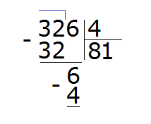
Затем из 6 вычитаем 4, получаем число 2, которое является остатком:
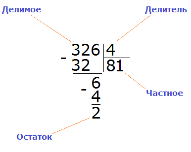
Получили 326 : 4 = 81 (2 в остатке)
Проверка: (81 × 4) + 2 = 324 + 2 = 326
Процедура, в которой мы ищем первое число для деления, сравнивая больше ли оно делителя или меньше, называется нахождением первого неполного делимого.
Вернёмся к предыдущему примеру 326 : 4. Первое неполное делимое в данном выражении было число 32, поскольку его мы разделили в первую очередь.
А в примере 25 : 3 первое неполное делимое было 25.
Пример 3. Найти значение выражения 384 : 5
Записываем данное выражение в уголком:
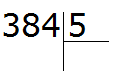
Сначала находим первое неполное делимое. Первая цифра меньше делителя, поэтому проверяем две цифры. Две цифры вместе образуют число 38, которое больше делителя. Это число будет первым неполным делимым. Его и будем в первую очередь делить на делитель:
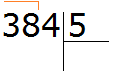
Сколько пятёрок в числе 38? Если сразу ответить сложно, то можно посмотреть в таблицу умножения на пять и найти произведение, которое меньше 38, но очень близко к нему или равно ему. Найдя такое произведение, нужно забрать оттуда множитель, который будет отвечать на наш вопрос:
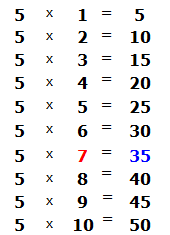
Это таблица умножения на пять. Находим произведение, которое меньше 38, но очень близко к нему или равно ему. Очевидно, что это произведение 35, которое выделено синим. Из этого выражения забираем множитель, который дал такое произведение. Это множитель 7, который выделен красным.
Данная семёрка отвечает на вопрос сколько пятёрок в числе 38. Записываем эту семёрку в правом уголке нашего примера:
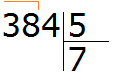Умножаем 7 на 5, получаем 35 и записываем его под 38:
Теперь из 38 вычитаем 35, получим 3:
Эта тройка является остатком, которая осталась неразделённой в результате деления 38 на 5. Но видно, что ещё надо разделить и 4. Эту 4 мы снесём и разделим вместе с тройкой:
Видно, что после того, как мы снесли четвёрку, она вместе с тройкой образовала число 34. Это число 34 мы будем делить на 5. Для этого опять задаем вопрос: «сколько пятёрок в числе 34?». Можно снова глянуть в таблицу умножения на пять и найти произведение, которое меньше 34, но очень близко к нему или равно ему:
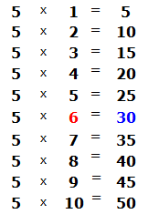
Видно, что в таблице умножения на пять число 30 меньше нашего 34, но близко к нему. Из этого выражения забираем множитель 6, который отвечает на наш вопрос. Записываем эту шестёрку в правом уголке нашего примера:
Теперь умножаем 6 на 5, получаем 30 и записываем это число под 34:
Теперь из 34 вычитаем 30, получаем 4. Эта четвёрка будет остатком от деления 384 на 5
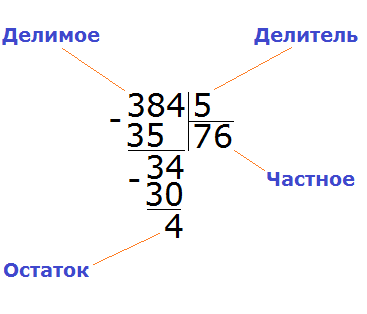
384 : 5 = 76 (и 4 в остатке)
Проверка:
(76 × 5) + 4 = 380 + 4 = 384
Пример 4. Найти значение выражения 8642 : 4
Этот пример немного посложнее. Записываем уголком данное выражение:
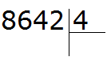
Первая цифра 8 больше делителя. Эта восьмёрка будет первым неполным делимым. Делим 8 на 4, получаем 2
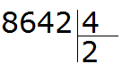Теперь умножаем 2 на 4, получаем 8. Записываем эту восьмёрку под первым неполным делимым:
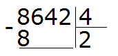
Вытаскиваем остаток: 8 − 8 = 0. Остаток от деления 8 на 4 это ноль. Ноль не записываем, поскольку решение примера не завершено.
Далее сносим цифру 6 и делим её на делитель, получаем 1
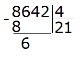Умножаем 1 на 4, получаем 4. Записываем эту четвёрку под снесённой шестёркой. Затем вынимаем остаток, отняв от шести четыре:
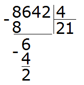
Получили остаток 2. Это остаток, который остался от деления 6 на 4.
Теперь сносим следующую цифру из делимого. Это цифра 4. Эта четвёрка вместе с предыдущим остатком 2 образует число 24. Его делим на делитель. Получим 6
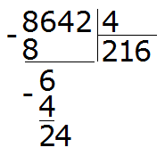
Умножаем 6 на 4, получаем 24. Записываем это число под 24
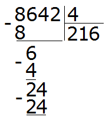
Вытаскиваем остаток: 24 − 24 = 0. Ноль это остаток от деления 24 на 4. Ноль, как мы уже договорились, не записываем. Далее сносим последнюю цифру 2
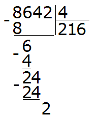
Здесь начинается самое интересное. Двойка это последняя цифра, которую мы снесли и которую надо разделить на делитель 4. Но дело в том, что двойка меньше четвёрки, а ведь делимое должно быть больше делителя. Если мы зададим вопрос «сколько четвёрок в двойке?«, то ответом будет ноль, поскольку двойка меньше четвёрки и не может содержать в себе число, бóльшее себя самогó.
Поэтому два разделить на четыре это ноль:
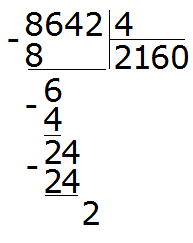Умножаем 0 на 4, получаем 0. Пишем этот 0 под двойкой:
Теперь находим остаток: 2 − 0 = 2. Двойка это остаток от деления 8642 на 4. Таким образом, пример завершён:
8642 : 4 = 2160 (2 в остатке)
Проверка: (2160 × 4) + 2 = 8640 + 2 = 8642
Деление чисел, у которых на конце 0
Чтобы разделить число, у которого на конце ноль, нужно временно отбросить этот ноль, выполнить обычное деление, и дописать этот ноль в ответе.
Например, разделим 120 : 3
Сколько троек в числе 120? Чтобы ответить на этот вопрос, временно отбрасываем ноль на конце у 120 и делим 12 на 3, получаем 4. И дописываем этот ноль в частном. В итоге получаем 40:
Теперь умножаем частное на делитель (40 на 3), получаем 120. Далее находим остаток: 120 − 120 = 0. Остаток равен нулю. Пример завершён.
120 : 3 = 40
Проверка 40 × 3 = 120.
Такие простые примеры не нуждаются в том, чтобы их решали уголком. Достаточно знать таблицу умножения. Далее просто дописывать нули на конце. Например:
12 : 3 = 4 (делимое без нулей на конце)
120 : 3 = 40 (здесь у делимого один ноль)
1200 : 3 = 400 (здесь у делимого два нуля)
12000 : 3 = 4000 (здесь у делимого три нуля)
В этом способе есть небольшой подвох. Если вы заметили, деля такие числа, мы ссылаемся на таблицу умножения. А представьте, что надо разделить 400 на 5.
Можно рассуждать по старому — отбросить временно все нули и разделить обычные числа. А что будет если отбросить все нули в числе 400? Мы обнаружим, что делим 4 на 5, что недопустимо. В этом случае, надо отбрасывать только один ноль, и делить 40 на 5, а не 4 на 5
Завершаем этот пример, как обычно умножая частное на делитель, и выводя остаток:
Этот способ работает только в том случае, если удаётся гладко применить таблицу умножения. В остальных случаях, придётся искать обходные пути, вычисляя уголком или собирая частное подобно детскому конструктору.
Например, найдём значение выражения 1400 : 5. Здесь отбрасывание нулей нам ничего не даст. Этот пример надо решать уголком или собрать ответ, подобно конструктору. Давайте рассмотрим второй способ.
Что такое 1400? Вспоминаем разряды чисел. 1400 это одна тысяча и четыре сотни:
1000 + 400 = 1400
Можно по-отдельности разделить 1000 на 5 и 400 на 5:
1000 : 5 = 200
400 : 5 = 80
и сложить полученные результаты:
200 + 80 = 280
Итого: 1400 : 5 = 280
Решим этот же пример уголком:
Деление многозначного числа на многозначное
Здесь придётся хорошенько напрячь свой мозговой аппарат и выжать из него по максимуму, потому что разделить многозначное число на многозначное не так-то просто.
Принцип деления остаётся тем же что и раньше. Здесь так же надо находить первое неполное делимое. Здесь так же могут присутствовать остатки от деления.
Для начала введём новое понятие — круглое число. Круглым будем называть число, которое оканчивается нулём. Например, следующие числа являются круглыми:
10, 20, 30, 500, 600, 1000, 13000
Любое число можно превратить в круглое. Для этого первую цифру, образующую самый старший разряд, оставляют без изменений, а остальные цифры заменяют нулями.
Например, превратим число 19 в круглое число. Первая цифра этого числа 1 образует старший разряд (разряд десятков) — эту цифру оставляем как есть, а оставшуюся 9 заменяем на ноль. В итоге получаем 10
Превратим число 125 в круглое число. Первая цифра 1 образует старший разряд (разряд сотен) — эту цифру оставляем без изменений, а оставшиеся цифры 25 заменяем нулями. В итоге получаем 100.
Превратим число 2431 в круглое число. Первая цифра 2 образует старший разряд (разряд тысяч) — эту цифру оставляем без изменений, а остальные цифры 431 заменяем нулями. В итоге получаем 2000.
Превратим число 13735 в круглое число. Первая цифра 1 образуют старший разряд (разряд десятков тысяч) — эту цифру оставляем без изменений, а остальные цифры заменяем нулями. В итоге получаем 10000.
Внимание! В дальнейшем понятия круглого числа и перевод любого числа в круглое будут рассмотрены более подробно.
Возвращаемся к делению многозначных чисел на многозначные. Сложность деления таких чисел заключается в том, что частное надо находить методом подбора. Для этого прибегают к различным техникам, например, превращают делимое и делитель в круглые числа.
Пример 1. Найти значение выражения 88 : 12
Записываем данное выражение уголком:
Задаём вопрос сколько чисел 12 в числе 88? С первого раза ответить сложно. Придётся рассуждать.
Со школы мы помним, что частное подбиралось методом угадывания, говоря «берем по два» или «берем по три».
Давайте попробуем угадать частное. К сожалению, его просто так с неба взять нельзя. Это частное должно быть таким, чтобы при его умножении на делитель, получалось число которое меньше делимого, но очень близко к нему или равно ему.
Давайте предположим, что частное равно 2. Умножаем это частное на делитель 12
Что это нам дало? Полученное число меньше делимого, но близко к нему? Нет. Оно конечно же меньше делимого 88, но очень далеко от него. Значит двойка как частное не подходит.
Пробуем следующее число. Допустим частное равно 5
Полученное число конечно меньше, но оно не близко к делимому 88. Значит пятёрка как частное тоже не подходит.
Попробуем сразу взять по 8
На этот раз полученное число превзошло делимое. А оно должно быть меньше делимого, но очень близким к нему или равным ему. Значит восьмёрка как частное тоже не подходит Попробуем тогда взять по 7
Наконец-то нашли подходящее частное! Умножив частное 7 на делитель 12, мы получили 84, которое меньше делимого, но близко к нему. Теперь находим остаток от деления. Для этого из 88 вычитаем 84, получаем 4.
88 : 12 = 7 (4 в остатке)
Проверка: (12 × 7) + 4 = 84 + 4 = 88
Как видно из примера, на подбор частного уходит драгоценное время. Если мы будем сидеть на контрольной или на экзамене, где каждая минута очень дорогá, этот метод нам явно не поможет.
Чтобы сэкономить время, можно делимое и делитель превратить в круглые числа, а затем осуществить деление этих круглых чисел. Делить круглые числа намного проще и удобнее.
Например, чтобы разделить 90 на 10, достаточно отбросить нули у обоих чисел и разделить 9 на 1. В итоге получим 90 : 10 = 9.
Количество отбрасываемых нулей должно быть строго одинаковым. К примеру, если мы делим 900 на 90, то отбрасываем по нулю от каждого числа, поскольку у числа 900 два нуля, а у 90 только один. Отбросив по нулю от каждого числа, мы получим выражение 90 : 9 = 10. В итоге получаем 900 : 90 = 10.
В делении круглых чисел также нет ничего сложного. Постарайтесь понять это. Если непонятно, изучите этот момент несколько раз. Это очень важно.
Ниже приведено несколько примеров, где делятся круглые числа. Отбрасываемые нули закрашены серым цветом:
800 : 10 = 80 (отбросили по нулю и разделили 80 на 1, получили 80)
800 : 80 = 10 (отбросили по нулю и разделил 80 на 8, получили 10)
900 : 10 = 90 (отбросили по нулю и разделили 90 на 1, получили 90)
400 : 50 = 8 (отбросили по нулю и разделили 40 на 5, получили 8)
320 : 80 = 4 (отбросили по нулю и разделили 32 на 8, получили 4)
Заметно, что всё в конечном итоге свóдится к таблице умножения. Именно поэтому в школе требуют знать её наизусть. Мы тоже этого требуем, хоть и не принуждаем.
Теперь давайте решим предыдущий пример 88 : 12 где мы бились, находя частное методом угадывания.
Для начала превращаем делимое и делитель в круглые числа.
Круглым числом для 88 будет число 80.
А круглым числом для 12 будет число 10.
Теперь делим полученные круглые числа:
80 разделить 10 будет 8. Эту восьмёрку мы пишем в частном:
Теперь проверяем, верно ли подобралось частное. Для этого умножаем частное на делитель (8 на 12). Восьмёрку как частное мы уже проверяли, когда решали этот пример методом угадывания. Она нам не подошла, поскольку после её умножения на делитель, получилось число 96, которое больше делимого. Зато подошло частное 7, которое меньше восьмёрки всего-лишь на единицу.
Отсюда можно сделать вывод, что в выражении 88 : 12 частное, полученное путём превращения делимого и делителя в круглые числа, больше лишь на единицу. Наша с вами задача уменьшить это частное на единицу.
Так и сделаем — уменьшим 8 на единицу: 8 − 1 = 7. Семёрка это частное. Записываем её в правом уголке нашего примера:
Как видно, этим способом мы решили этот пример намного быстрее.
Пример 2. Найти значение выражения 1296 : 144
Записываем уголком данное выражение. Сразу же находим первое неполное делимое. Его образуют все четыре цифры делимого:
Это деление многозначного числа на многозначное. Давайте применим только что изученный метод. Превратим делимое и делитель в круглые числа, а затем разделим их.
Для делимого 1296 круглым числом будет 1000. А для делителя 144 круглым числом будет 100.
Делим 1000 на 100, получим 10. Проверим полученную десятку, умножив её на делитель 144
Десятка не подходит, поскольку при умножении получается число, которое больше делимого.
Попробуем взять по 9, уменьшив десятку на единицу.
Проверяем девятку. Для этого умножаем её на делитель:
Красота! Полученное число оказалось не только ближе к делимому, но и равным ему. Это значит, что деление выполнилось без остатка. Завершаем данный пример, вычитая из 1296 полученное число 1296
1296 : 144 = 9
Проверка: 144 × 9 = 1296
Пример 3. Попробуем решить большой и сложный пример 227 492 : 331
Записываем уголком данное выражение. Сразу же определяем первое неполное делимое. Его образуют первые четыре цифры делимого 2274. Значит сначала будем делить 2274 на 331. Их же превратим в круглые числа.
Для числа 2274 круглым числом будет 2000. А для 331 круглым числом будет 300
Получили 6. Проверим верно ли подобралась эта шестёрка. Для этого, умножим её на делитель 331:
Шестёрка подошла, потому что она отвечает на вопрос сколько чисел 331 в числе 2274. Если бы мы взяли по семь, то получилось бы следующее:
Если бы мы взяли по 7 и проверили эту семёрку, то получили бы 2317, которое больше делимого, а это недопустимо.
Продолжаем решать наш пример. Вычитаем из 2274 число 1986, получаем 288:
288 это остаток от деления 2274 на 331. Далее, чтобы продолжить деление, нужно снести девятку:
Теперь надо разделить 2889 на 331. Превращаем их в круглые числа и делим их. Сразу же проверяем полученное таким способом частное:
Умножив 6 на 331, мы снова получили 1986. Это число должно быть меньше делимого 2889, но близким к нему или равным ему. Но 1986 очень далеко от него. Значит шестёрка, как частное не подходит. Проверим тогда семёрку. Это первый случай, когда нам не помог второй способ, который экономил нам время. Дальнейшее решение придётся проводить методом угадывания частного:
Проверили семёрку. Снова получили число, которое далеко от делимого 2889. Значит семёрка тоже не подходит. Проверим восьмёрку:
Восьмёрка подошла. Она отвечает на вопрос сколько чисел 331 в числе 2889. Если бы мы взяли по девять, то при умножении на делитель, получили бы число 2979, а это уже больше делимого 2889.
Теперь вынимаем остаток от деления 2889 на 331. Для этого от 2889 вычитаем 2648 и получаем 241
241 это остаток от деления 2889 на 331. Чтобы продолжить деление, нужно снести 2 из главного делимого:
Теперь делим 2412 на 331. Возьмём по 7
Теперь находим последний остаток. Для этого из 2412 вычитаем 2317, получаем 95. На этом пример завершается:
227 492 : 331 = 687 (95 в остатке)
Проверка: (331 × 687) + 95= 227 397 + 95 = 227 492
На этом данный урок можно завершить. Не расстраивайтесь, если сразу не научитесь делить числа уголком. Этот навык нарабатывается со временем в сочетании с интенсивными тренировками. Ошибки дело не страшное. Самое главное — понимать.
Отметим, что в данном уроке рассмотрено только деление с остатком. Деление без остатка мы рассмотрим в следующих уроках. Сделано это с целью не усложнять обучение. Как говорится, всему своё время.


{kind=link}
{kind=link}
{kind=link}
{kind=link}
{kind=link}
{kind=link}
{kind=link}